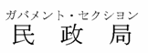
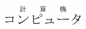
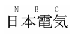
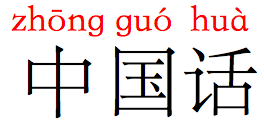
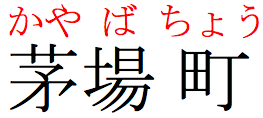
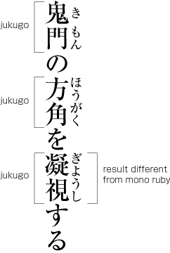
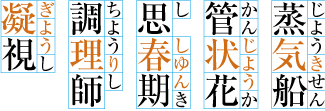

详细信息
ruby这个名称源于英国排字工使用的一种字号（约为正常10磅字体的一半）。
通常，行间注在东亚文字中用于为生僻字进行标音，为读者不熟悉的字（如儿童或学习书写的外国人）或具有多种读音且无法通过上下文确定的字（如一些日文姓名）提供注音。比如，行间注广泛用于教育材料和儿童读物中。
行间注偶尔也用于传达表意字符的含义信息。
在日文中，行间注通常称为振假名，标音通常以平假名的形式出现，在横排文本的上方，直排文本的右侧。
在用于表达语义信息的罕见情况下，日文行间注可以出现在横排文本的下方，直排文本的左侧。
如下例所示，可以为同一段基文同时标注音和义的行间注。
日文中直排和横排行间注的示例
示例中的行间注显示为红色仅是为了引起你的注意——行间注通常与基文颜色相同。
尽管日文中的行间注通常用平假名书写，但偶尔也会有汉字、片假名（特别是在日文漫画中）和拉丁字母的行间注。



使用片假名、汉字和拉丁字母的行间注示例。
在中国大陆，通常在每个字的上方标注拼音。

简体中文的拼音标音
繁体中文中的行间注通常使用注音符号来标注发音。无论基文是直排还是横排，注音符号都出现在每个字的右侧。
注意：虽然声调符号不是组合字符，但它们出现在注音符号列的右侧。

繁体中文基文的行间注
行间注的分类
日文排版需求文档描述了行间注的三种不同行为方式。
单字行间注
单字行间注（mono ruby）通常用于文本的标音。
在单字行间注中，行间注位于单个基文汉字旁。在这种情况下，一般不会注文通常不会跨越到相邻汉字旁，尽管这可以通过样式进行调整。请注意，在下图中，单个汉字的注文通常在其基文字符上方居中，在注文两侧留出小间隙，而三个字符的注文会强制基文汉字与其邻字拉开一些距离。

日文中的单字行间注
你可以在任何地方拆分使用单字行间注的词，行间注会与其基文汉字保持在一起。
分词连写行间注
分词连写行间注（group ruby）用于发音无法对应到单个基文汉字的情况，或用于跨越整个基文的语义性注释。下图显示了一个日文词的示例，基文中的每个汉字都没有独立的发音。注文作为一个整体应用于两个基文汉字。
日文中的分词连写行间注
换行时，使用分词连写行间注的文本不能拆分，必须作为一个整体换行。
熟语行间注
熟语指的是日文复合名词，即由多个汉字组成的词，如調理師（厨师）。
熟语行间注是一个术语，用于描述有时表现得像分词连写行间注，有时表现得像单字行间注的注释。我们会详细描述熟语行间注，因为人们经常不太理解这种行间注。
熟语行间注的行为类似于单字行间注，因为注文和与单个基文汉字之间存在强关联。当你在行末拆分一个词时，这一点会变得清楚：你会看到行间注被拆分，使得注释特定基文汉字的注文与该汉字保持在一起。熟语行间注的不同之处在于，当词在行末没被拆分时，注文可能延伸至相邻基文汉字旁。

熟语行间注
右侧的图片包含三个熟语行间注的示例。
在前两个示例中，效果与单字行间注相同，因为没有基文汉字和与该汉字无关的注文重叠。
第三个例子显示出了熟语行间注的差异。注文的前三个字符与第一个汉字相关联，最后一个注文字符与第二个汉字相关联。然而注文却在两个汉字上均匀分布。
但是请注意（这是一个重要的区别！），我们并不是像分词连写行间注那样简单地将注文分布到整个词上，而是有具体的规则，在某些情况下会出现间隙。请看以下熟语行间注分布的示例：

熟语行间注的分布，在某些地方显示间隙。
还要注意，如果第三个词在行末被拆分，使第二个汉字移动到下一行，只有最后一个平假名字符会随之移动，所以还是看起来像单字行间注。